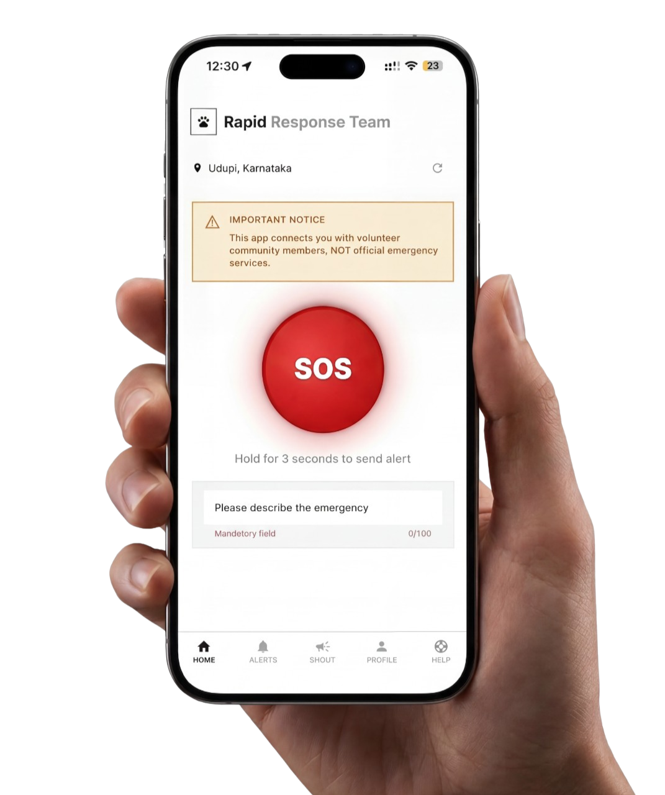

Rapid Response
HELP. WHEN
SECONDS
MATTER.
मदद। जब
हर सेकंड
बहुत मायने रखता है।
A community network that connects nearby volunteers when an animal needs urgent help. यह एक ऐसा नेटवर्क है जो आसपास के लोगों को जोड़ता है, ताकि किसी जानवर को तुरंत मदद चाहिए हो तो जल्दी सहायता पहुँच सके।


Learn how the app works जानिए ऐप कैसे काम करता है
When An Animal
Needs Help
जब किसी जानवर को
मदद की ज़रूरत पड़ती है
This is how things usually happen today -
Someone notices an injured animal.
Messages go out on WhatsApp.
Calls are made. Photos get forwarded.
But the right person rarely sees it in time.
आज ज़्यादातर यही होता है -
किसी को सड़क पर घायल जानवर दिखता है।
फिर व्हाट्सऐप पर मैसेज जाते हैं।
फोन किए जाते हैं। फोटो आगे भेजी जाती हैं।
लेकिन सही आदमी तक खबर अक्सर समय पर पहुँचती ही नहीं।
Slow Alerts अलर्ट देर से पहुँचता है
Messages take time to reach the right people. सही लोगों तक बात पहुँचने में काफी देर लग जाती है।
Unclear Location जगह साफ़ पता नहीं चलती
Volunteers may struggle to find the exact place. मदद करने वालों को सही जगह ढूँढने में दिक्कत होती है।
Disconnected Volunteers मदद करने वालों तक खबर नहीं पहुँचती
People willing to help often never see the alert. जो लोग मदद करना चाहते हैं, उन्हें कई बार अलर्ट दिखता ही नहीं।
Time Lost कीमती समय निकल जाता है
Every minute without help can worsen injuries. मदद में हर मिनट की देरी से जानवर की हालत और बिगड़ सकती है।
One Tap.
Instant Help.
बस एक टैप,
और मदद का अलर्ट
A Network
Of Nearby Volunteers
आसपास मौजूद
मदद करने वाले लोग
The Rapid Response App instantly broadcasts an alert
to volunteers within the same district.
Anyone nearby who is available can see the alert
and coordinate help.
Rapid Response ऐप उसी जिले में दर्ज सभी लोगों तक
SOS अलर्ट तुरंत पहुँचा देता है।
जो भी आसपास है और मदद कर सकता है,
वह अलर्ट देखकर आगे आ सकता है।
District Alert System जिला अलर्ट सिस्टम
Alerts include the caller’s phone number, GPS location and a short description so nearby volunteers can respond quickly. अलर्ट में भेजने वाले का फोन नंबर, जीपीएस लोकेशन और छोटा सा संदेश होता है, ताकि पास के लोग जल्दी समझकर मदद कर सकें।

How The Network
Works
यह नेटवर्क
कैसे काम करता है
Raise SOS SOS भेजें
Open the app and press the SOS button when an animal needs urgent help. जब किसी जानवर को तुरंत मदद चाहिए हो, तब ऐप खोलकर SOS बटन दबाएँ।
Location Shared लोकेशन साथ जाती है
The alert includes your phone number, GPS location and a short description. अलर्ट के साथ आपका नंबर, जीपीएस लोकेशन और छोटा सा संदेश जाता है।
District Alert जिले भर में अलर्ट जाता है
All Rapid Response users in the same district can see the alert. उसी जिले में दर्ज सभी लोगों को यह अलर्ट दिखता है।
Volunteer Responds कोई मदद के लिए आगे आता है
Nearby volunteers who are available can call and coordinate help. जो लोग उपलब्ध होते हैं, वे कॉल या चैट करके मदद जुटा सकते हैं।
Why More Volunteers Matter उतनी जल्दी मदद पहुँचेगी
District With Many Volunteers जहाँ ज़्यादा लोग जुड़े हों
- group Many people in the district have the app installed. उस जिले में कई लोगों के फोन में ऐप होता है।
- notifications The SOS alert reaches many nearby volunteers instantly. SOS अलर्ट तुरंत आसपास के कई लोगों तक पहुँच जाता है।
- call Someone nearby is likely to respond and coordinate help. पास से कोई न कोई जल्दी मदद के लिए आगे आ जाता है।
District With Few Volunteers जहाँ बहुत कम लोग जुड़े हों
- person_off Very few people in the district are using the app. उस जिले में बहुत कम लोग यह ऐप चला रहे होते हैं।
- notifications_off The SOS alert may be seen by only a small number of volunteers. SOS अलर्ट शायद बहुत कम लोगों तक ही पहुँचे।
- schedule Help may take longer or may not arrive. मदद देर से मिले, या कभी-कभी मिले ही नहीं।
The Rapid Response App works best when more people in a district join the network.
Every new volunteer increases the chances that an animal in distress receives help quickly.
यह ऐप तब सबसे अच्छा काम करता है,
जब एक ही जिले में ज़्यादा लोग इससे जुड़ते हैं।
हर नया जुड़ने वाला व्यक्ति
किसी मुसीबत में फँसे जानवर तक जल्दी मदद पहुँचने की संभावना बढ़ाता है।
What The App Is
& What It Is Not
यह ऐप क्या है
और क्या नहीं है
What The App Is यह ऐप क्या करता है
- check_circle A coordination network for animal emergencies. जानवरों से जुड़ी इमरजेंसी में लोगों को जोड़ने वाला नेटवर्क।
- check_circle A way to alert nearby volunteers in your district. अपने जिले के लोगों तक जल्दी अलर्ट पहुँचाने का तरीका।
- check_circle A tool that shares GPS location and contact number. एक ऐसा जरिया जो जीपीएस लोकेशन और नंबर साझा करता है।
- check_circle A platform where volunteers can respond if available. एक ऐसा मंच जहाँ उपलब्ध लोग चाहें तो मदद के लिए आगे आ सकते हैं।
What The App Is Not यह ऐप क्या नहीं करता
- cancel The app does not come with a rescue team. यह ऐप अपनी कोई रेस्क्यू टीम साथ नहीं लाता।
- cancel Raising an SOS does not guarantee help. SOS भेजने से मदद मिलना तय नहीं हो जाता।
- cancel The platform does not operate shelters. यह प्लेटफॉर्म किसी शेल्टर को नहीं चलाता।
- cancel The app does not directly rescue or transport animals. यह ऐप खुद जाकर जानवरों का रेस्क्यू या ट्रांसपोर्ट नहीं करता।
Who Uses
The Network
इस नेटवर्क को
कौन इस्तेमाल करता है
01 Volunteers 01 मदद के लिए आगे आने वाले लोग
People who want to help animals and respond when alerts appear in their district. ऐसे लोग जो जानवरों की मदद करना चाहते हैं और अपने जिले में अलर्ट आते ही प्रतिक्रिया दे सकते हैं।
02 Animal Feeders 02 जानवरों को खाना खिलाने वाले लोग
Community feeders who may need help during medical emergencies. ऐसे लोग जो इलाके के जानवरों को खाना खिलाते हैं और ज़रूरत पड़ने पर मदद माँग सकते हैं।
03 Pet Owners 03 पालतू जानवर रखने वाले लोग
Pet owners who may require urgent assistance when a pet is injured or missing. वे लोग जिनके पालतू जानवर घायल हो जाएँ या अचानक गुम हो जाएँ और तुरंत मदद चाहिए हो।
04 Animal Lovers 04 जानवरों से लगाव रखने वाले लोग
Anyone who wants to help animals when they see an alert nearby. कोई भी इंसान जो आसपास अलर्ट देखकर मदद करना चाहता हो।


Search
Questions
सवाल खोजें
Type a keyword to find answers instantly. जवाब पाने के लिए कोई शब्द लिखिए।
Popular Questions लोकप्रिय सवाल
Still need help? और मदद चाहिए?
ask@rapid-response.in
Know Your
Rights
अपने अधिकार
जानें
Ask any question about animal welfare law in India. Get answers with exact laws, sections, and steps to take. भारत में पशु कल्याण कानून के बारे में कोई भी सवाल पूछें।
⚖️ Legal information only — not a substitute for advice from a qualified lawyer. ⚖️ केवल कानूनी जानकारी — किसी योग्य वकील की सलाह का विकल्प नहीं।